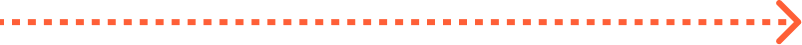
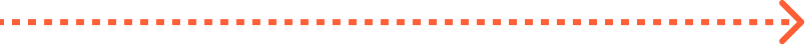
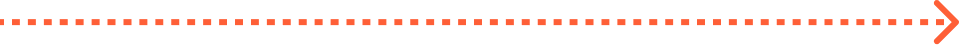
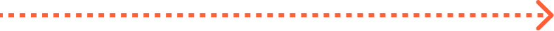
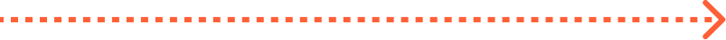
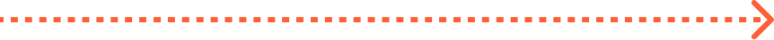
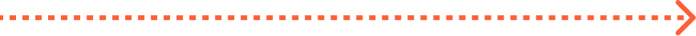
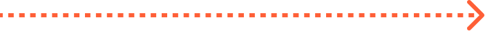
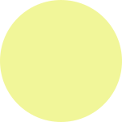

About...
인간 = 소우주?
관상학에서는 우주 안에 존재하는 지구에 살아가는 인간 또한 작은 우주, 즉 소우주라고 여긴다. 따라서 관상학이란 새로운 것을 창조한 학문이 아니라 이미 존재하는 자연을 그대로 사람에게 대입해 만들어낸 것이다. 사람의 형태가 자연과 닮을 수록 잘 생긴 것이고, 자연과 멀어질 수록 그렇지 않게 생긴 것이다.
About...
관상은 꼴을 보는 것
볼 관(觀) + 꼴, 모양 상(相)으로 얼굴의 형상과 꼴을 본다는 뜻이다. 다만 관상은 얼굴만 보는 것이 아니라 머리끝부터 발끝까지, 행동거지를 포함한 사람의 전체를 읽는 것이다.
관상학(觀相學, Physiognomy)은 겉으로 드러난 인간의 얼굴 생김새를 관찰하여 그 사람의 성격, 기질, 운명을 판단하려는 점(占)을 말한다. 이 용어는 고대 그리스어로 자연이나 본성을 의미하는 'physis'와 지식 혹은 판단을 의미하는 'gnomon'이 결합하여 만들어졌다. 관상은 문명이 발생한 시기와 비슷한 때에 생겨났고, 마의 상법으로부터 체계화되어 현재까지 내려오는 점술로서 역사적으로 동서양을 막론하고 고대부터 근대까지 인간을 이해하는 하나의 방법론으로 통용되었다. 그러나 현대 과학의 발달과 함께 그 타당성이 검증되지 않아 현재는 대표적인 의사과학으로 분류된다.